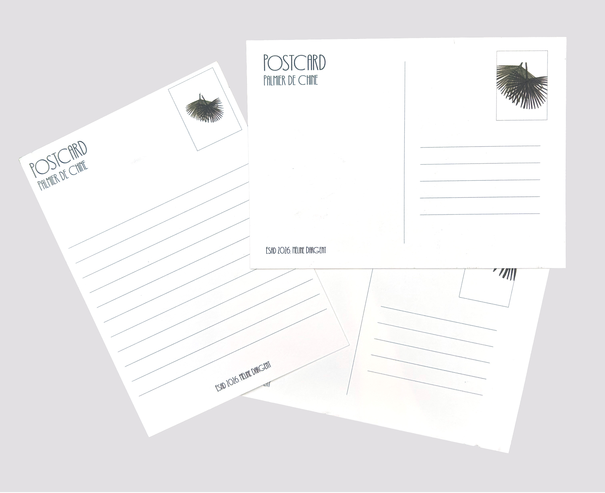

Le jardin des plantes, Amiens
Cartes postales



Création d’une série de cartes postales à partir de dessins réalisés au Jardin des Plantes d'Amiens. Inspiré par le croisement de deux palmes de palmier de Chine, ce projet explore un jeu de lignes et de superpositions où le regard se perd, ne sachant plus quelle feuille passe au-dessus ou en dessous de l’autre.